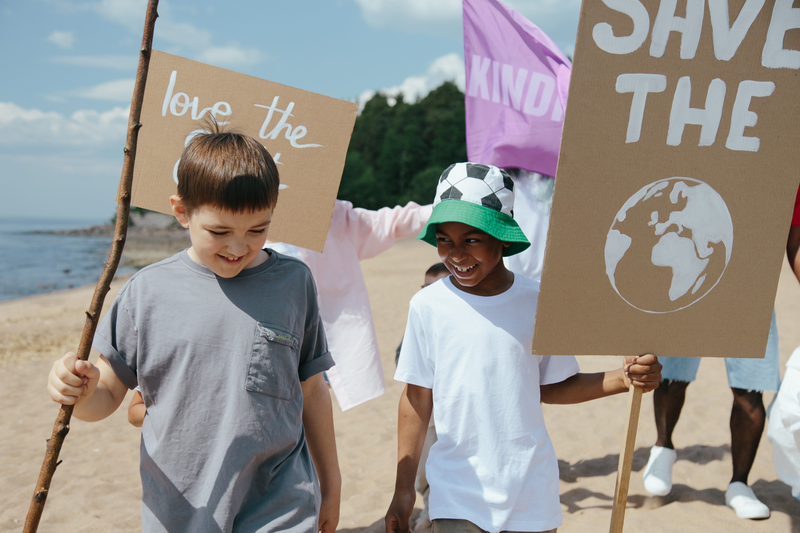

Clean Forest During Pandemic
December 22,2020
Forests support over 86 million green jobs and the livelihoods of millions of others. More than 90% of those who live in extreme poverty are forest-dependent.
Wood from sustainably-managed forests can support a range of industries, including paper production and construction.
Investment in forest restoration can therefore also help create more jobs – something which could prove particularly relevant post-pandemic.
another passage

Our Proud Young Generation
December 31,2021
Pasage about act
another passage
Let’s Clean Up Thailand’s Marine Environment with Upcycling the Oceans Activity
November 28,2019

Bangkok (Thailand) – November 7, 2018 – With the help of The Tourism Authority of Thailand (TAT) invites all nature-loving divers to help preserve Thailand’s marine environment through the activity “Upcycling the Oceans”. This is an online activity in which Thai and foreign divers share their experiences of scuba diving and ocean conservation in Thailand through the website www.tourismthailand.org/7greens, to educate people about the situation and inspire young divers to preserve the marine life and the beauty of the underwater world in Thailand.
All entrants have a chance to win special prizes from leading companies, such as a 44,600 Baht gift voucher from the Similan Seven Sea Club, a 39,000 Baht gift voucher from Beach Club by Haadtien Scuba Club, and more!
How they participate activity
1. Participants must register through our website or TAT website
2. All participants must own a valid diving license. The participants must express briefly their experience of diving and marine conservation.
3. Then our committee announced the names of nine winners through TAT website
Leave a Comment